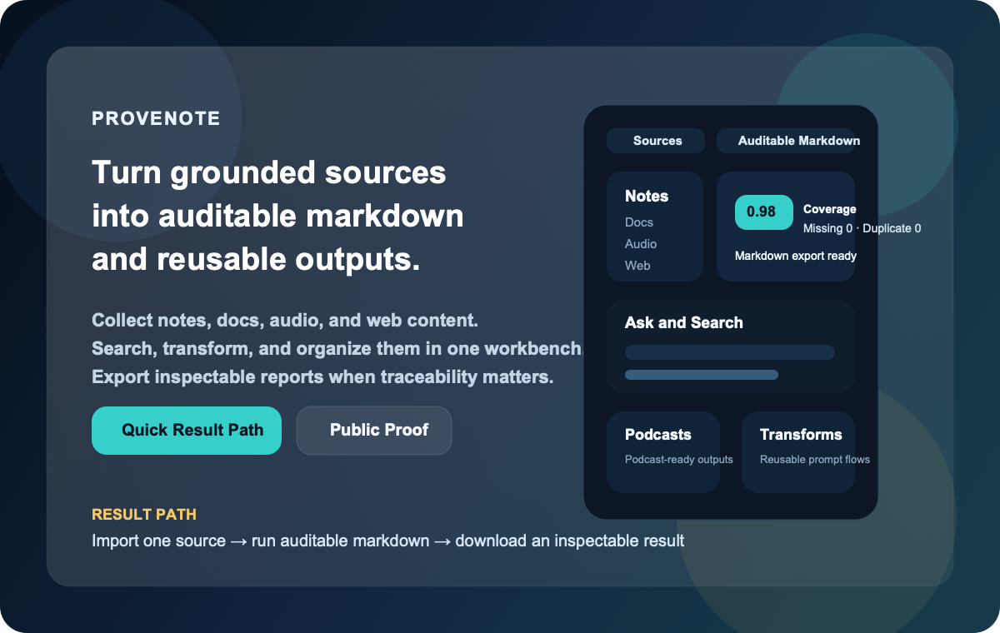
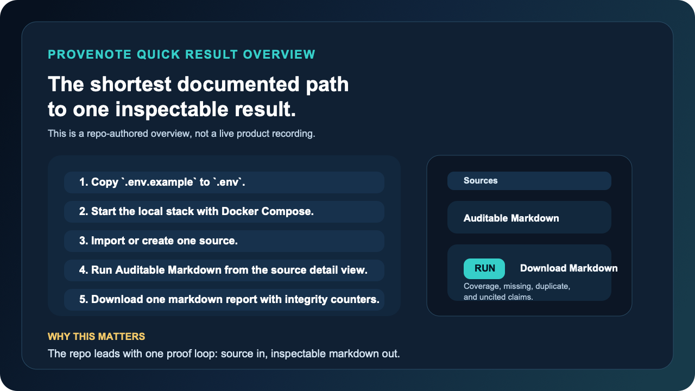

1. Start from the messy source
Begin with Long Context when the real problem is too much raw material, not too few chat boxes.
Provenote is a source-grounded workbench for taking long chats, copied web threads, notes, files, and research piles, then turning them into structured insight, auditable markdown, notebook drafts, and reusable research-thread outcomes.
The first door is still the same simple path: messy long context to structured insight, then into note, research-thread, or draft lanes. MCP, host bundles, and distribution pages are real second-ring carry-forward surfaces, but they do not outrank the product path.

Provenote works best when the visitor sees the product path first, the proof second, and the ecosystem surfaces only after the core workbench already makes sense.
Begin with Long Context when the real problem is too much raw material, not too few chat boxes.
Use the Quick Result Path when you want one honest local proof loop from setup to auditable output.
Open Public Proof and Project Status when you want receipts, non-claims, and current scope boundaries.

This is the fastest visible result loop the repo documents today: source import to auditable markdown, without pretending to be a one-click hosted trial.
| Surface | Today | Not the same as |
|---|---|---|
| Official MCP Registry | Live websiteUrl-backed entry for provenote-mcp |
package-backed public artifact or host marketplace listing |
| Host bundles | Public-ready package artifacts for Claude Code, Codex, Cursor, OpenCode, and OpenClaw-compatible flows | official marketplace or directory listing |
| Public skills | Repo-owned submission materials | live OpenHands/extensions or ClawHub listing |
Once the product path is clear, use MCP, Distribution, Companion Host Bundles, and FAQ as supporting rooms around the main workshop.
If you want the second-ring atlas in Markdown form for repo reading, keep docs/index.md as the detailed map. This public page is the lighter front door, not the full atlas.